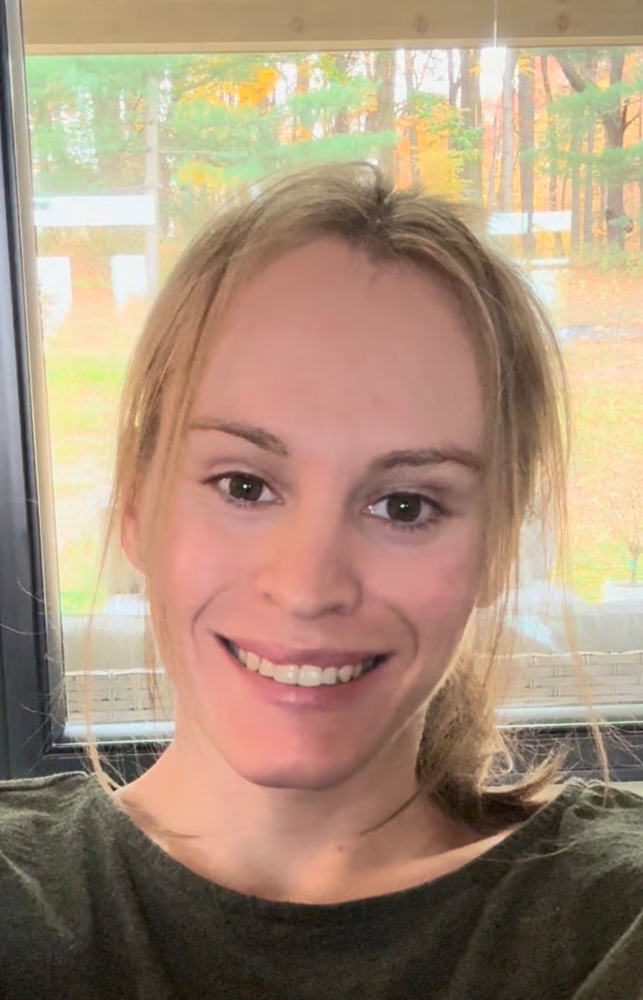

About Me

Hello! My name is Hallie. I was born on June 19, 1996 and grew up in a small town in central Ohio.
My family consists of me, my mom, Tami, my dad, Dave, my older sister, Katie, and my older brother, Steve.
I began playing piano when I was 6 and have always enjoyed math and puzzles like my mom.
In High School I ran cross country and track competitively. I also love tennis, ping pong, longboarding, and snowboarding.
I graduated from the University of Pittsburgh with a B.Sc in Mechanical Engineering, and it was there that I began analyzing music
through the framework of mathematics. At first this was looking at Just Intonation internval ratios and their effect on musical pleasantness,
though this quickly evolved to modeling musical timbres via integral transformations and various signal processing techniques.
About a year after I graduated college I came out to family and friends as transgender. I do feel proud of this aspect of my identity,
though I would be lying if I said if was all roses; this has been a very confusing journey for both
internal and external reasons. More about my experience may be found here.